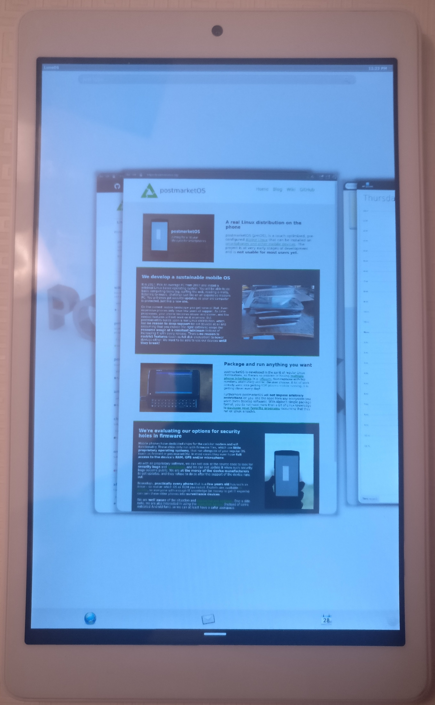

Teclast X80 Pro (teclast-x80pro)
Jump to navigation
Jump to search
|
 Teclast X80 Pro running Luna | |
| Manufacturer | Teclast |
|---|---|
| Name | X80 Pro |
| Codename | teclast-x80pro |
| Released | 2017 |
| Category | testing |
| Original software | Windows 10 Home / Android 5.1 |
| Hardware | |
| Chipset | Intel Atom x5-Z8300 |
| CPU | 4 core, 1.84 GHz |
| GPU | Intel HD Graphics |
| Display | 1920x1200 |
| Storage | 32 GB |
| Memory | 2 GB |
| Architecture | x86_64 |
| Non-Android based device | ✔ |
{kind=link}
| USB Networking |
Unavailable
|
|---|---|
| Flashing |
Works
|
| Touchscreen |
Works
|
| Display |
Works
|
| WiFi |
Works
|
| FDE |
Works
|
| Mainline |
Works
|
| Battery | |
| 3D Acceleration |
Works
|
| Audio | |
| Bluetooth | |
| Camera | |
| GPS | |
| Mobile data | |
| SMS | |
| Calls | |
| USB OTG | |
| NFC | |
| Accelerometer | |
|---|---|
| Magnetometer | |
| Ambient Light | |
| Proximity | |
| Hall Effect | |
| Ir TX | |
|---|---|
| TrustZone | |
Contents
Contributors
- magmastonealex
Maintainer(s)
- magmastonealex
Device owners
Notes
There are a ton of tablets on Amazon/Ebay with equivalent specifications - Intel processor, decent display, SDIO wifi, which are likely to be generally equivalent to this tablet.
What works
- Wifi
- Touchscreen
- 3D accelleration
- Mainline
- EFI boot
What has not been investigated
- Bluetooth
- GPS? (Unclear if the device has GPS or not)
- Audio
Installation
Installation is unlike most Android based devices, as the Teclast X80 Pro uses EFI to boot. This process is likely to be repeatable across many similar EFI based tablets (like the Surface Pro lineup, and many other cheap x86 Windows tablets on ebay/amazon).
WARNING: this will remove your ability to boot into Android. Make backups!
NOTE: You cannot remove the "OS Selection" screen. This method will replace the Android boot option with postmarketOS.
Much more detail to be added, but basic outline:
- Install Arch Linux to USB key (Download ISO, dd if=archlinux-*.iso of=/dev/sdXY status=progress). Note: The Arch Linux is only used once to modify the boot files and to install postmarketOS.
- Connect keyboard and USB stick to tablet (through USB hub usually works best).
- The postmarketOS files (vmlinuz-teclast-x80pro, initramfs-teclast-x80pro, teclast-x80pro.img) should be available, e.g. on an SD card inserted in the Teclast device.
- Enter EFI/BIOS (Either enter bios directly by tapping esc/del, or through Windows -> settings -> Update/Recovery -> Recovery -> Advanced -> Reboot Now -> Additional Options -> UEFI Firmware Interface)
- Scroll over to "Boot"
- At the bottom, there are a list of overrides for this boot, select your USB stick.
- Wait for Arch Linux to boot and give you a shell.
mount /dev/mmcblk0p2 /boot/efi
refind-install --root /boot/efi
cd /boot/efi && cp EFI/refind/refind_x64.efi EFI/BOOT/bootx64.efi && cp -rv EFI/refind/* EFI/BOOT/
- Edit EFI/BOOT/refind.conf, you may want to uncomment enable_touch.
-
mkdir /mnt/boot/EFI/pmos && cp vmlinuz-teclast-x80pro /mnt/boot/EFI/pmos/vmlinuz && cp initramfs-teclast-x80pro /mnt/boot/EFI/pmos/initramfs.img
This should probably be:mkdir /boot/efi/EFI/pmos && cp vmlinuz-teclast-x80pro /boot/efi/EFI/pmos/vmlinuz && cp initramfs-teclast-x80pro /boot/efi/EFI/pmos/initramfs.img
dd if=teclast-x80pro.img of=/dev/mmcblk0p9
- Reboot. At OS selection, choose Android. You will see the rEFInd menu, select the postmarketOS kernel (the file name under the active icon should contain pmos). You should be booted into postmarketOS!
Wifi
Samsung S3 guide...